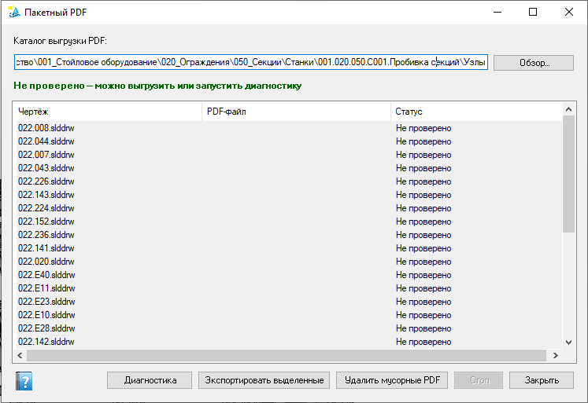

Пакетная диагностика PDF
Диагностика и пакетный экспорт PDF по позициям активной сборки или по текущему (отфильтрованному) списку реестра изделия. В списке — и позиции с чертежом, и без него; статусы PDF, экспорт выделенных и очистка «мусорных» PDF.
Как открыть
- Лента Velum → PDF пакет — нужна открытая сборка и уровень
admin. - Из реестра изделия — кнопка Экспорт PDF: в пакет попадают все позиции текущего списка (узел дерева + фильтры столбцов), не только те, у которых уже есть .slddrw.
Источник — состав сборки / список реестра изделия, а не произвольная папка «всех чертежей на диске». Каталог выгрузки связан со свойством «Путь pdf» на чертеже. Первая выгрузка при отсутствии доступного пути часто выполняется вручную.
Элементы окна
- Каталог выгрузки PDF и «Обзор…».
- Список: Чертёж, PDF-файл, Статус (в т.ч. «Не проверено», «Нет чертежа», «Нужен экспорт», «Устарел», «Мусорный PDF» и др.).
- Диагностика — открывает/проверяет чертежи и обновляет статусы по составу, переданному при запуске.
- Экспортировать выделенные, Удалить мусорные PDF, Стоп, Закрыть.

Окно «Пакетный PDF»: каталог выгрузки и список позиций со статусом до/после диагностики.
Контекстное меню списка
| Пункт | Назначение |
|---|---|
| Выбрать все | Выделить все видимые строки. |
| Открыть чертёж | Открыть .slddrw выделенных строк (нужен существующий путь чертежа). |
| Отключить экспорт | На чертеже: «Нужен pdf = No»; затем обновляется статус строки. |
| Не нужен чертеж | На детали/сборке-источнике: «Нужен чертеж = No»; зеркало в реестре документов обновляется, если файл там зарегистрирован; строка убирается из списка пакета. Доступен при любом статусе, в т.ч. «Нет чертежа». |
«Отключить экспорт» и «Не нужен чертеж» — отдельный блок меню (после разделителя). Свойство «Нужен чертеж» правится только в документе SOLIDWORKS или этим пунктом; в формах реестра документов / проблем отдельных пунктов меню для него нет.
Порядок работы
- Откройте сборку или подготовьте фильтр в реестре изделия и нажмите Экспорт PDF.
- Укажите каталог PDF при необходимости.
- При необходимости снимите «лишние» позиции без чертежа через Не нужен чертеж.
- Запустите Диагностику для проверки штампов/PDF.
- Экспортируйте выделенные или удалите мусорные PDF (в т.ч. при «Нужен pdf = Нет»).
Свойства и ограничения
- Нужен чертеж (деталь/сборка) — логическое Yes/No. При Save детали/сборки, если свойства ещё нет, Velum создаёт его со значением Yes. При «No» позиция не попадает в пакетный PDF. Зеркало в реестре документов обновляется при sync / после «Не нужен чертеж».
- Нужен pdf (чертёж) — участие в учёте/экспорте PDF; отсутствие флага часто трактуется как «нужен».
- Путь pdf — канонический каталог/файл PDF на чертеже.
- путь чертежа — на детали/сборке; при отсутствии файла статус «Нет чертежа».
- Чертёж для экспорта должен быть сохранён на диск.
См. также
- Экспорт PDF (одиночный)
- Пакетный DXF
- Реестр изделия
- Реестр документов